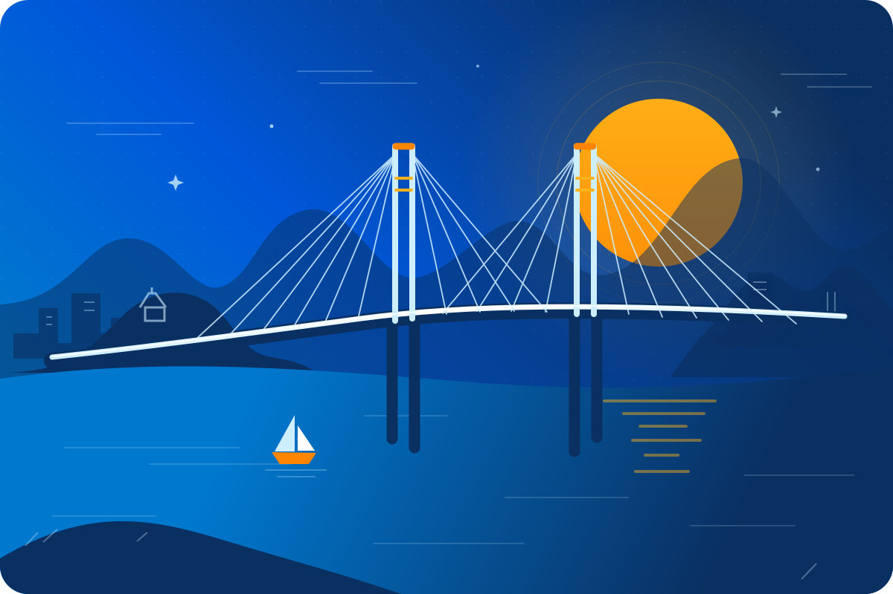
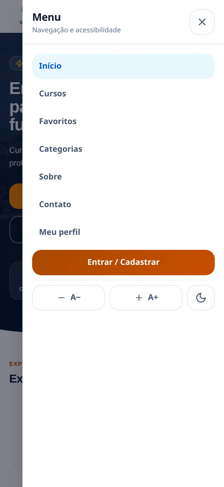
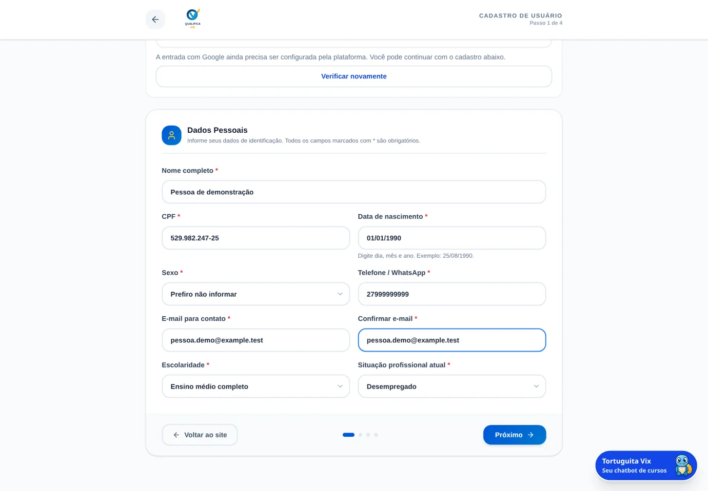
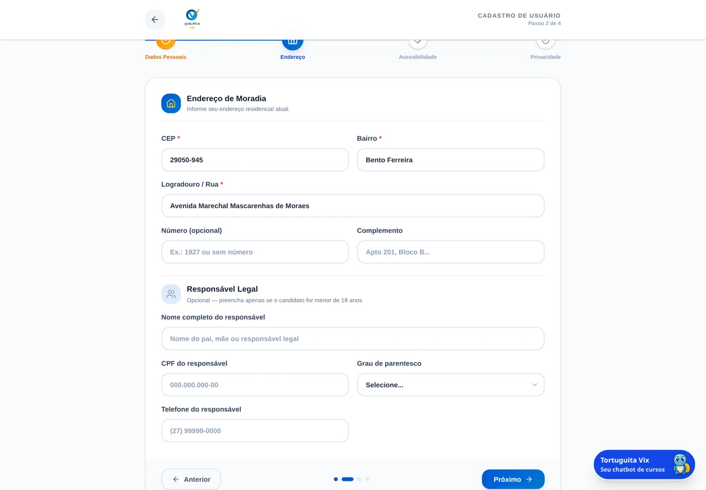
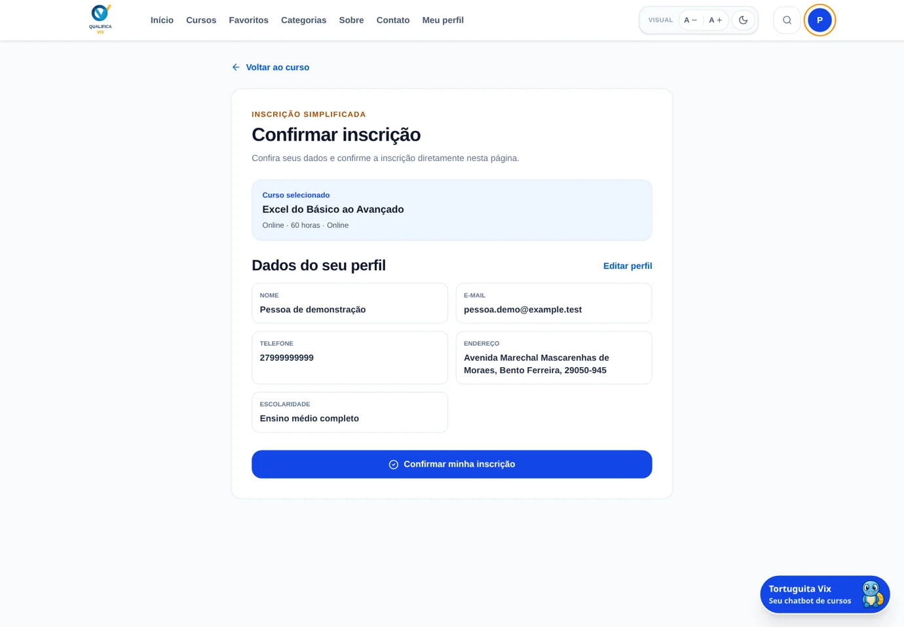
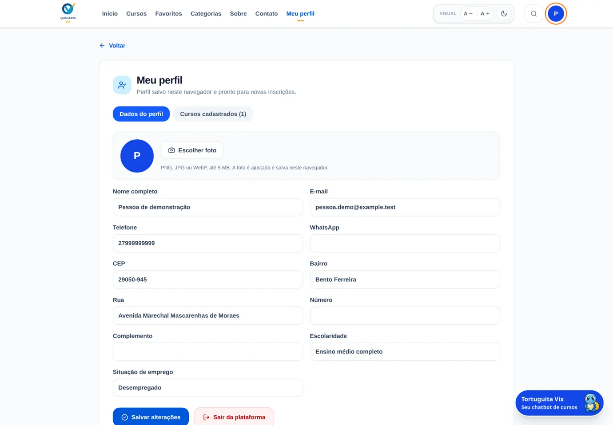

Explorar
Pesquise por área, compare as fichas e escolha um curso.
Uma escolha informada
PLATAFORMA DE QUALIFICAÇÃO PROFISSIONAL
Da descoberta de um curso à sua inscrição.
Uma jornada guiada, do seu jeito.
O PERCURSO
Consulte os cursos, crie seu perfil e confirme a oferta escolhida: cada ação tem seu próprio resultado.
Pesquise por área, compare as fichas e escolha um curso.
Uma escolha informadaPreencha seus dados e consentimentos para criar seu perfil.
Seu perfil criadoConfirme a oferta escolhida e veja o registro em Meu perfil.
Seu curso no perfilExplorar ajuda a decidir; o perfil identifica você; a inscrição registra o curso.
UM CATÁLOGO PARA EXPLORAR
Explore as áreas e compare cursos online ou presenciais conforme seu objetivo de aprendizagem.
NAVEGAÇÃO
Use o cabeçalho para abrir cursos, interesses salvos, informações da plataforma e sua área pessoal.
Veja os destaques, pesquise ofertas e explore as áreas
Retome os cursos salvos e conheça a proposta
Crie ou acesse sua conta e consulte as inscrições
Encontre os canais de ajuda e tire dúvidas sobre o uso
NO SEU RITMO
Abra o menu compacto, ajuste a leitura e percorra as mesmas funções do computador.

BUSCA INTELIGÍVEL
Digite um assunto e combine Categoria e Modalidade para encontrar ofertas mais próximas do que procura.
Exemplo visual: “Excel”. Categoria e Modalidade refinam os resultados; Limpar filtros reinicia a seleção.
SUA LISTA DE INTERESSES
Guarde cursos de interesse para voltar às fichas e comparar antes de se inscrever.
A FICHA DO CURSO
Abra Ver curso para conferir conteúdo, modalidade, horas e condições da oferta antes de escolher.
Confira também local, público indicado e situação da oferta. Datas e condições precisam ser confirmadas.
SEIS ABAS, UMA DECISÃO INFORMADA
Percorra as seis abas para entender a proposta, os assuntos previstos e o que precisa confirmar.
Consulte cada aba. Se docente, calendário ou critérios não estiverem publicados, confirme com o ofertante.
ACESSO À PLATAFORMA
Use o formulário no primeiro cadastro ou recupere seu perfil com a conta Google correspondente, quando disponível.
COMEÇAR
Preencha os dados e conclua os quatro passos do formulário.
ENTRAR OU COMEÇAR
Quando disponível, confirme sua identidade e siga o caminho indicado.
ENTRADA COM GOOGLE
O Google confirma sua identidade: um perfil reconhecido é recuperado; um novo usuário completa o cadastro.
Sua senha fica com o Google.
O cadastro e as inscrições do servidor são recuperados.
Nome e e-mail ajudam a começar. Dados e consentimentos continuam necessários.
Use o mesmo e-mail do seu cadastro para recuperar o perfil correspondente.
QUATRO ETAPAS
Preencha uma parte por vez; Próximo verifica a etapa atual antes de continuar.
Identifique-se e confira seus contatos.
Informe sua residência e o responsável, se necessário.
Conte suas necessidades, se desejar.
Leia e escolha os consentimentos.
ETAPA 1 · DADOS PESSOAIS
Preencha identificação e contato com atenção para receber os avisos e evitar dificuldades no acesso.
Nome e CPF identificam o cadastro; informe o nascimento em DD/MM/AAAA.
Inclua o DDD e revise o e-mail de contato antes de avançar.
Selecione a escolaridade e a situação profissional atuais.

ETAPA 2 · ENDEREÇO
Informe o CEP de Vitória–ES, revise rua e bairro e complete os dados do responsável para menores de idade.
Digite e aguarde a consulta.
Confira a rua e o bairro.
Informe apenas quando houver.

ETAPA 3 · ACESSIBILIDADE E RENDA
Informe necessidades de adaptação e dados complementares se desejar; esta etapa é opcional.
Necessidades, adaptações e observações.
Renda, dependentes e programas sociais.
ETAPA 4 · PRIVACIDADE
Abra os documentos e diferencie os aceites necessários das autorizações que você pode escolher.
PARA CONCLUIR O CADASTRO
VOCÊ PODE RECUSAR
QUANDO APARECE UM AVISO
Leia o aviso, ajuste a informação apontada e continue pela etapa em que já está.
Confira dia, mês e ano.
Digite o mesmo endereço nos dois campos.
Aguarde a consulta e revise a residência.
Recupere seu acesso com o mesmo e-mail.
A CONCLUSÃO
Aguarde o perfil ser criado e, se houver um curso escolhido, confira também a confirmação da inscrição.
Você já pode acompanhar seus dados.
Confira a lista no seu perfil.
Toque uma vez em Concluir cadastro e aguarde a resposta. Se começou pela ficha, confira também o resultado da inscrição.
INSCRIÇÃO DIRETA
Revise os dados, confirme a inscrição na própria plataforma e veja o curso em Cursos cadastrados.
Abra um curso com inscrição disponível.
Confira os dados e toque em Confirmar minha inscrição.
O curso deve aparecer em Cursos cadastrados.

REGRA DE INSCRIÇÃO
O mês do calendário permite até três registros por perfil; um cancelamento não reinicia a contagem.
Mês do calendário · Sem duplicar inscrição ativa no mesmo curso
DESISTÊNCIA
Consulte o prazo no perfil e confirme a desistência em até três dias corridos após a inscrição.
a partir da inscrição
Cancelar não devolve uma inscrição ao limite mensal.
MEU PERFIL
Abra Meu perfil para revisar seus dados de contato e consultar os cursos com inscrição confirmada.

FOTO E DADOS GUARDADOS
Cadastros e inscrições ficam no serviço; foto, favoritos e memória dependem do navegador utilizado.
REGISTRADO NO SERVIDOR
O Google recupera o perfil correspondente ao e-mail verificado.
NESTE NAVEGADOR
Dados editados no perfil também são locais. Foto: PNG, JPG ou WebP até 5 MB.
Ao entrar em outro aparelho, confira o perfil recuperado e os itens que ficam apenas no navegador.
TORTUGUITA VIX
Além de guiar esta apresentação, a Tortuguita ajuda a explorar cursos e entender os próximos passos no site.
Compare cursos,
entenda as regras
e abra as telas.
Você confirma
cada ação.
CONVERSA E MEMÓRIA
Reabra a conversa, reinicie o assunto ou apague a memória local sem alterar suas inscrições.
A conversa sai da tela. Você pode reabri-la.
Com perfil, o histórico recente fica local.Limpa as mensagens e começa outro assunto.
Interesses e preferências são preservados.Remove os registros do chat deste perfil no navegador.
As inscrições permanecem.Sem perfil, a conversa dura apenas enquanto a página estiver aberta.
COMUNIDADE E INFORMAÇÃO
Leia os relatos da página inicial e use Sobre para conhecer a proposta da plataforma.
Uma experiência
pode inspirar
outro começo.
Use as setas para ler os depoimentos e o formulário para publicar o seu.
Compartilhe apenas o que você deseja mostrar.
A área Sobre explica a proposta. Consulte o ofertante sobre as condições oficiais.
DOCUMENTOS E CONTATO
Consulte as regras pelo cadastro ou rodapé e procure os canais efetivamente publicados em Contato.
As regras de uso da plataforma.
Como os dados são utilizados e armazenados.
Entenda os direitos e os cuidados no uso dos dados pessoais.
SE ALGO NÃO FUNCIONAR
Informe a mensagem, a etapa e o aparelho; esses detalhes ajudam o atendimento a entender o problema.
Identifique a operação e o campo que precisa de revisão.
Verifique a conexão e o endereço do site. No celular, Google exige endereço seguro autorizado.
Se o cadastro já existe, tente entrar com o mesmo e-mail.
Ao pedir ajuda, oculte CPF, e-mail pessoal e credenciais nas capturas.
AGORA É COM VOCÊ
Pesquise um curso, guarde-o e leia a ficha: uma prática que dispensa cadastro e dados pessoais.
Escolha um curso do seu interesse.
Adicione o curso aos Favoritos.
Abra a grade e anote o que deseja confirmar.
QUALIFICA VIX · SEU PRÓXIMO PASSO
Conheça. Cadastre-se. Inscreva-se.
E confira o resultado no seu perfil.
APOIO · CATÁLOGO
Use este quadro para comparar nomes, horas e modalidades do catálogo examinado em 19/10/2026.
Catálogo da versão de 19/10/2026. A ficha da oferta é a referência para a decisão.
APOIO · VALIDAÇÕES
Confira os formatos e condições mais comuns antes de tentar avançar novamente no cadastro.
11 dígitos no formato aceito. A plataforma não comprova titularidade na Receita.
DDD e número: 10 ou 11 dígitos no total.
Data real, no formato DD/MM/AAAA, sem data futura.
Endereço válido; no formulário comum, a confirmação deve coincidir.
CEP com 8 dígitos e residência de Vitória–ES. Aguarde a consulta.
Para menores de 18 anos: nome, CPF, vínculo e telefone.
APOIO · DOCUMENTOS
Os textos explicam o uso do site; regras e documentos da turma são confirmados com a instituição.
Termos, privacidade e informações sobre dados pessoais.
Esta versão não possui upload de documentos pessoais.
A inscrição é conferida em Cursos cadastrados.
Não há emissão de certificado ou comprovante de inscrição em PDF nesta versão.
APOIO · DÚVIDAS FREQUENTES
Em outro aparelho, use o acesso correspondente e diferencie os registros do serviço dos dados locais.
Cadastros e inscrições ficam no servidor; itens locais podem não aparecer.
Use o endereço público HTTPS autorizado. Um IP privado por HTTP não atende ao fluxo Google.
A conta Google precisa corresponder ao e-mail do cadastro para recuperar esse perfil.
Encerra o acesso atual; não exclui o cadastro nem cancela os cursos.
Referência: guia completo e versão da plataforma analisada em 19/10/2026.
Para apresentar no celular, gire a tela. Toque nas setas ou deslize.